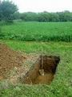

| inicio | | | física | | | divagaciones | | | anecdotario | | | bibliografía | | | biografía | | | @ | |||
|  | El machete en el estudio de la física |
|
| Se permite su reproducción citando la fuente. Última actualización dic-2018. Buenos Aires, Argentina. |
| ||||||||||||||||||||||||||
| ||||||||||||||||||||||||||
| Correspondecia entre Agustín y sus colegas | ||||||||||||||||||||||||||
|
||||||||||||||||||||||||||
|
||||||||||||||||||||||||||